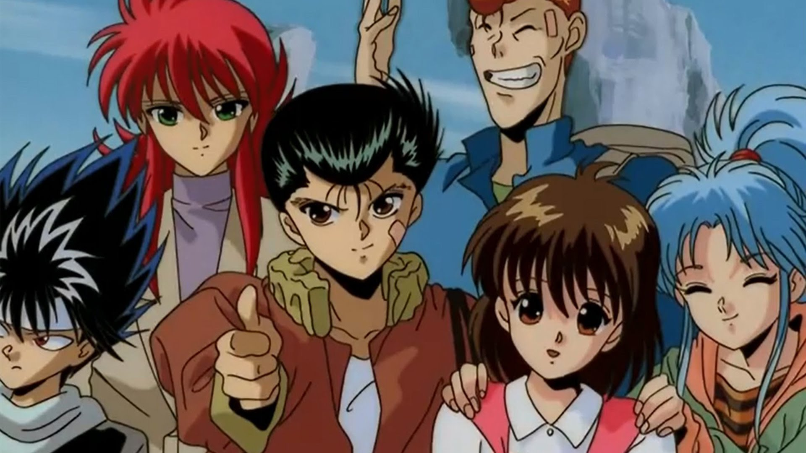
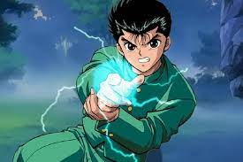
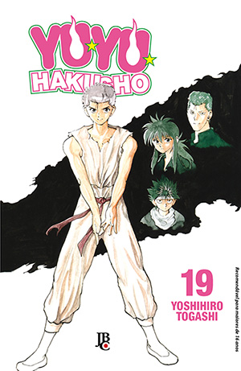
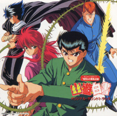
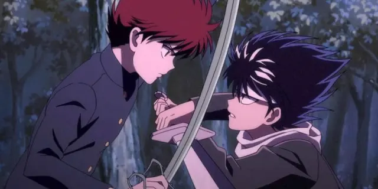
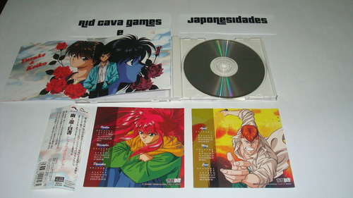
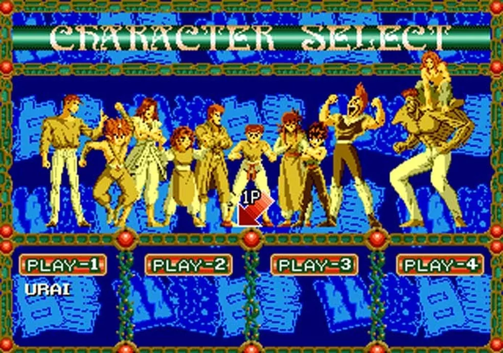
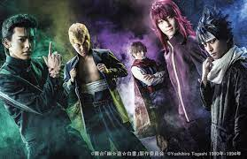

Yu Yu Hakusho (幽☆遊☆白書 Yū Yū Hakusho?) é uma série de mangá shonen escrita e ilustrada por Yoshihiro Togashi que conta a história de Yusuke Urameshi, um delinquente de quatorze anos de idade que é atingido e morto por um carro ao tentar salvar a vida de uma criança. Após realizar alguns testes apresentados a ele por Koenma, o filho do governante do submundo, Yusuke é revivido e é lhe dado o título de "Detetive Sobrenatural", com o qual deve investigar vários casos envolvendo demônios e fantasmas no mundo humano. A história se torna mais focada em batalhas e torneios de artes marciais à medida que progride. Togashi começou a criar a série Yu Yu Hakusho por volta de novembro de 1990, baseando-a em seu interesse em séries de ocultismo e filmes de terror e sendo influenciado pela mitologia budista.
erie de mangá e animes Yu Yu hakusho
A série consiste em 175 capítulos, que foram publicados originalmente na revista Weekly Shōnen Jump entre dezembro de 1990 e julho de 1994 e compilados em 19 volumes tankōbon pela editora Shueisha. No Brasil, foi publicada pela editora JBC em meio-tanko e depois relançada em formato original tankōbon. Uma adaptação televisiva animada dirigida por Noriyuki Abe foi exibida originalmente no Japão entre 10 de outubro de 1992 e 17 de dezembro de 1994 pela Fuji TV, que a co-produziu com a empresa Yomiko Advertising e o estúdio Pierrot. Mais tarde, foi licenciada no Brasil pela extinta Tikara Filmes em 1996, onde foi transmitida também pela extinta Rede Manchete entre 1997 e 1998, pela RedeTV! em 1999. Em 2004, foi transmitida com uma nova dublagem pelo Cartoon Network no bloco Toonami, sendo retransmitida em 2005, 2007 e 2008 pela Rede 21, Band e PlayTV, respectivamente. A série de televisão também tem sido transmitida em vários outros países ao redor do mundo. A franquia Yu Yu Hakusho gerou dois filmes de animação, uma série de OVAs, álbuns de música, jogos eletrônicos e outras mídias.

Personagem Yusuke Urameshi
Yu Yu Hakusho foi bem recebido, com as vendas do mangá tendo chegado a mais de 50 milhões de cópias vendidas apenas no Japão e o mangá também ganhou o prestigioso Prêmio de Mangá Shogakukan na categoria de melhor mangá shonen de 1993. Já a série animada ganhou o prêmio Animage Anime Grand Prix de melhor anime de 1994 e 1995. Yu Yu Hakusho foi assistido por um grande número de telespectadores no Japão e uma ampla gama de faixas etárias no Brasil. O anime recebeu comentários positivos dos críticos principalmente na América do Norte, elogiando sua narrativa, personagens e pela ação.
Enredo
Yu Yu Hakusho segue a história de Yusuke Urameshi, um delinquente que, num ato incaracterístico de altruísmo, é atropelado por um carro e morto em uma tentativa de salvar um garotinho, empurrando-o para fora do caminho.[2][3][4] Seu fantasma é recebido por Botan, que se apresenta como a navegante do rio Sanzu, que transporta as almas para o submundo ou Mundo Espiritual (霊界 Reikai?), onde elas podem ser julgadas pela vida após a morte. Botan informa Yusuke que seu ato pegou até mesmo o submundo de surpresa e que ainda não havia um lugar feito para ele seja no céu ou inferno. Assim, Koenma, filho do governante do submundo Enma, oferece a Yusuke uma chance de retornar ao seu corpo através de uma série de testes.[2][3][4] Yusuke sucede com a ajuda de seus amigos Keiko Yukimura e Kazuma Kuwabara. Depois de voltar à vida, Koenma concede a Yusuke o título de "Detetive Sobrenatural" (霊界探偵 Reikai Tantei?, lit. "Detetive do mundo espiritual"), encarregando-o de investigar atividades sobrenaturais dentro do mundo humano (人間界 Ningen Kai?). Em seu primeiro caso, Yusuke deve recuperar três tesouros que foram roubados do submundo por três demônios: Hiei, Kurama e Gouki.[3] Yusuke recolhe os três tesouros com a ajuda de sua nova técnica, o "Leigun", um tiro de aura ou Reiki (霊気? lit. "Energia espiritual), disparado mentalmente através de seu dedo indicador.[2][4] Em seguida, ele viaja para as montanhas em busca da velha mestra de artes marciais Genkai.untamente com o seu rival Kuwabara, Yusuke luta através de um torneio organizado pela Genkai para encontrar seu sucessor. Yusuke usa a competição como uma cobertura para procurar Lando, um demônio que rouba as técnicas dos mestres de artes marciais e mata-os.[3] Yusuke derrota Lando na rodada final do torneio e treina com Genkai durante vários meses, ganhando mais domínio sobre sua aura.[2] Yusuke é então enviado para o Castelo Labirinto no Mundo das Trevas (魔界 Makai?, lit.: "Inferno"), um terceiro mundo ocupado unicamente por demônios, onde Kuwabara e os recém-reformados Kurama e Hiei ajudam-o a derrotar as Quatro Bestas, um quarteto de demônios que tentam chantagear Koenma para remover a barreira que os mantêm fora do mundo humano.
O próximo caso de Yusuke o leva a uma missão de resgate, onde ele encontra Toguro, um humano transformado em um demônio. A fim de testar sua força, Toguro convida Yusuke para o Torneio das Trevas (暗黒武術会 Ankoku Bujutsukai?), onde os organizadores do evento são corruptos, e participam do torneio humanos ricos em times de demônios, e ocasionalmente humanos, que lutam em batalhas ferozes para conseguir que seus desejos sejam realizados. O time Urameshi, consiste em Yusuke, Kuwabara, Kurama, Hiei e um Genkai disfarçado, que passam as primeiras rodadas extenuantes para enfrentar o time Toguro na final e vencer o torneio. Eles descobrem que o líder do time Toguro, Sakyo, estava tentando ganhar o torneio a fim de criar um grande buraco no mundo humano para que inúmeros demônios invadissem.[2] Com sua perda, Sakyo destrói a arena do torneio, matando a si mesmo no processo.
Após o torneio, Yusuke volta para casa, mas tem pouco tempo para descansar até que ele é desafiado para uma luta por três adolescentes que possuem poderes sobre-humanos e que acabam fazendo o detetive de refém. Kuwabara e os outros resgatam-o e percebem que tudo isso foi um teste feito por Genkai. É revelado que Shinobu Sensui, o antecessor de Yusuke como Detetive Sobrenatural, recrutou seis outros seres poderosos para ajudá-lo a continuar com o plano que Sakyo não obteve sucesso, que é abrir um buraco para o Mundo das Trevas, a fim de causar o genocídio da raça humana. Yusuke e seus amigos desafiam e derrotam os companheiros de Sensui um-por-um, culminando em uma batalha final entre os dois detetives. Sensui mata Yusuke, e em seguida, retira-se para o portal recém-aberto para o Mundo das Trevas. Yusuke renasce como um demônio parcial, descobrindo que seu pai passou por um gene recessivo que esconderia um herdeiro com energia suficiente para fazer com que sua linhagem demoníaca seja revelada.[2] Yusuke viaja para o Mundo das Trevas e derrota Sensui com a ajuda do espírito de seu ancestral que toma controle do corpo de Yusuke para terminar a luta
Quando volta para o mundo humano, Yusuke é destituído de seu título de detetive por ordens do rei Enma para ser capturado e executado com medo de que o sangue de demônio de Yusuke pudesse causar-lhe, causando um tumulto no mundo humano. Yusuke, inquieto por ter sido controlado por seu ancestral Raizen, aceita uma oferta feita pelos seguidores de Raizen para voltar ao Mundo das Trevas. Raizen, desejando um sucessor para o seu território, está à beira de morrer de fome, uma morte que poderia derrubar o delicado equilíbrio político dos três poderes dominantes do Mundo das Trevas. Hiei e Kurama são convocados pelos outros dois governantes, Mukuro e Yomi, respectivamente, para se preparar para uma guerra inevitável.[2] Os três protagonistas treinam no campo por um ano, tempo durante o qual Raizen morre e Yusuke herda seu território. Yusuke toma a iniciativa e propõe um torneio de luta para nomear o verdadeiro governante do Mundo das Trevas, que é combinado por Mukuro e Yomi. Durante o torneio, Yusuke e Yomi se reúnem na segunda rodada eliminatória, onde Yusuke é derrotado e cai inconsciente. Yusuke desperta dias mais tarde e descobre que o final do torneio e que uma competição semelhante está a ser realizada frequentemente para determinar o governante do Mundo das Trevas. Yusuke permanece no Mundo das Trevas por mais algum tempo, mas acabou voltando para o mundo humano para ficar com Keiko.

Ilustração do personagem usando o Leigan
Midia
Mangá
A série de mangá Yu Yu Hakusho escrita e ilustrada por Togashi foi originalmente serializada na revista japonesa Weekly Shōnen Jump da editora Shueisha a partir de dezembro de 1990 a julho de 1994.[16][17] O mangá é composto por 175 capítulos, que foram compilados em 19 tankobon com o primeiro sido lançado em 10 de abril de 1991, e o último lançado em 12 de dezembro de 1994.[18][19] Entre 4 de agosto de 2004 e 4 de março de 2005, a editora Shueisha lançou todas as edições do mangá em formato kanzenban. Cada um dos 15 volumes kanzenban apresentava uma nova capa e mais capítulos do que a edição tankobon.[20][21] Yu Yu Hakusho também foi publicado como parte da série Shueisha Jump Remix de livros em formato de revista. Nove volumes foram lançados entre 22 de dezembro de 2008 e 27 de abril de 2009.[22][23] Uma versão bunkobon começou a ser publicada em 18 de novembro de 2010 e foi concluída em 18 de outubro de 2011.[24][25]
No Brasil, o mangá foi licenciado pela editora JBC e publicado em 38 edições meio-tanko entre novembro de 2002 e novembro de 2004. Entre fevereiro e março de 2005 a editora publicou três volumes film comics da série. Em outubro de 2014 o mangá foi relançado em formato tankobon até abril de 2016.

Ilustração do mangá de Yu Yu Hakusho
Anime
A adaptação do anime Yu Yu Hakusho foi dirigida por Noriyuki Abe e co-produzida pela Fuji Television, Yomiko Advertising, e pelo estúdio Pierrot.[26] A série, composta de 112 episódios, foi exibida de 10 de outubro de 1992 a 7 de janeiro de 1995 pela Fuji Television.[27] Os episódios foram lançados em 23 videocassetes pela Pony Canyon de 1 de janeiro de 1995 a 6 de dezembro de 1995. Eles também foram lançados em 28 volumes de DVD por Beam Entertainment, com os volumes 8-14 sendo lançados em 25 de março de 2002, já os volumes 15-21 foram lançados em 25 de abril de 2002 e os volumes de 22-28 foram lançados em 25 de maio de 2002.[28] O anime diferia de seu material de origem que é o mangá contendo diferentes níveis de violência e palavrões, bem como pequenas variações de estilo da arte de um para o outro.[29] Em 1996, a série foi licenciada pela Tikara Filmes para sua distribuição no Brasil.[30] A dublagem da série ficou a cargo do estúdio Audio News, sob direção de Marco Ribeiro, que também dublou o protagonista Yusuke.[31] Após a falência da Tikara em 1998, a série foi readquirida pela Cloverway em 2004, fazendo com que a série ganhasse uma nova dublagem, pelo mesmo estúdio, e mantendo as vozes dos personagens principais.
O anime estreou no Brasil em uma segunda-feira, 18:30 horas do dia 24 de março de 1997, pela Rede Manchete, logo após Kamen Rider RX e antes de Cavaleiros do Zodíaco, e permaneceu na programação do canal até sua extinção.[30] Quase cinco anos após sua estreia no Japão, o Brasil foi o primeiro país no ocidente a exibir o anime. Em 1999, o anime foi exibido na RedeTV!, que havia substituído a Manchete em 1999, o que durou pouco tempo, uma vez que o novo canal não fez pagamento de direitos de exibição. Em 2004, passou a ser transmitido pelo Cartoon Network, através do extinto bloco Toonami. Durante sua transmissão no canal, diversas cenas consideradas "inapropriadas" foram editadas.[30] Em 2005, voltou a ser exibido na TV aberta, desta vez pela Rede 21, cuja transmissão recebia mais cortes do que sua transmissão na TV paga.[30] Depois disso, a série foi retransmitida pela Rede Bandeirantes em 2007,[30] e pela PlayTV em 2008.[32] No Japão, uma coletânea de três volumes separados de DVD foi lançada, assim como 28 DVDs que totalizam os 112 episódios da série.[33] A distribuidora japonesa de vídeo doméstico Bandai Visual começou a lançar a série em Blu-ray em 27 de outubro de 2009, com o primeiro conjunto contendo um picture drama definido após o final da série reunindo os membros do elenco de dubladores da série para gravar um novo diálogo.[34] No Brasil, a distribuidora PlayArte lançou em 2005 uma coletânea de 30 volumes em DVD contendo todos os episódios da série.

Ilustrção do anime Yu Yu Hakusho
Filmes
Dois filmes de animação baseados em Yu Yu Hakusho foram produzidos. Ambos os filmes possuem uma história original e não são canônicos para o mangá. O primeiro, simplesmente intitulado Yu Yu Hakusho foi lançado no Japão em 10 de julho de 1993 como parte de um festival sazonal de cinema.[36][37] No filme, os protagonistas Yusuke e Kuwabara estão em uma missão para resgatar Koenma que foi sequestrado por uma dupla de demônios que desejam o Selo Dourado, um selo usado para acabar com a condenação de almas na vida após a morte.[38] Yu Yu Hakusho: Meikai Shito Hen - Hono no Kizuna (幽★遊★白書: 冥界死闘篇・炎の絆??) foi lançado nos cinemas japoneses em 9 de abril de 1994.[37][39] A trama gira em torno de Yusuke e seus amigos defendendo o mundo humano contra os habitantes de um quarto plano de existência chamado "Mundo das Trevas". O filme foi exibido dublado no Brasil em 2006, no canal Cartoon Network.
OVAs
Uma série de OVAs de Yu Yu Hakusho intitulado Eizou Hakusho (映像白書 Eizō Hakusho?) foi lançado no Japão em formato VHS entre 1994 e 1996.[41][42][43] Os OVAs apresentam clipes muito curtos que ocorrem após o final da série. Eles também contêm montagens de vídeo do anime, image songs, entrevista com os dubladores, e satíricos curtas animados com foco nos quatro protagonistas.Os OVAs consistem em três volumes, bem como uma enciclopédia de abertura e de término. Um conjunto de quatro DVDs contendo esta série foi lançado no Japão por Pony Canyon em 15 de dezembro de 2004.

OVA de Yu Yu Hakusho
Em 2018, mais dois OVAs foram lançados. Ambas as histórias foram baseadas em capítulos do mangá que não foram adaptadas para o anime. Two Shots é a história de como Kurama e Hiei se conheceram. Já All or Nothing é o penúltimo capítulo do mangá e conta com sobre a última missão em conjunto do quarteto principal em um resgate no Mundo Espiritual.
CDs
A música do anime Yu Yu Hakusho foi composta por Yūsuke Honma.A série possui uma música-tema de abertura, "Hohoemi no Bakudan" (微笑みの爆弾 Hohoemi no Bakudan?, lit. "Bomba de Sorriso") por Matsuko Mawatari, bem como cinco músicas-temas de encerramento: "Homework ga Owaranai" (ホームワークが終わらない Hōmuwāku ga Owaranai?, lit. "O Dever de Casa Nunca Termina"), "Sayonara ByeBye" (さよならＢｙｅＢｙｅ Sayonara ByeBye?, lit. "Adeus, ByeBye") e "Daydream Generation" também por Mawatari; e "Unbalance na Kiss o Shite" (アンバランスなＫｉｓｓをして Anbaransu na Kiss wo Shite?, lit. "Beije o Desequilibrado") e "Taiyō ga Mata Kagayaku Toki" (太陽がまた輝くとき Taiyō ga Mata Kagayaku Toki?, lit. "O Sol Está Brilhando de Novo") por Hiro Takahashi. Vários CDs de áudio foram lançados no Japão. O Yū Yū Hakusho Original Soundtrack foi lançado em dois volumes separados por Pony Canyon em 18 de janeiro de 1997. Os discos contêm faixas instrumentais da série e algumas músicas-temas vocais.Também foi lançado naquele dia o Yū Yū Hakusho: Music Battle, uma série de três álbuns com faixas vocais cantadas pelos dubladores japoneses com os seus personagens correspondentes.Compilações de canções vocais, incluindo Yū Yū Hakusho Super Covers, Yū Yū Hakusho Super Dance Mix, e Yu Yu Hakusho: Sai-Kyou Best Selection Album foram lançados em 16 de dezembro de 1995, 21 de março de 1996 e 21 de março de 1997, respectivamente.Yū Yū Hakusho: Collective Songs e Yū Yū Hakusho: Collective Rare Trax, que contêm versões covers das canções temáticas interpretadas pelos dubladores da série, foram ambas lançadas em 17 de março de 1999.Duas radionovelas foram lançadas pela Shueisha, seno que o primeiro destes é uma adaptação de áudio do capítulo gaiden "Dois Tiros".Um segundo CD da trilha sonora do segundo filme e uma maxi single com as canções vocais de Mawatari e Takahashi também foram publicados.

CDs de Yu Yu Hakusho
Jogos Eletronicos
Uma série de jogos eletrônicos foram desenvolvidos baseados na série Yu Yu Hakusho, a maioria dos quais que foram produzidos foram lançados exclusivamente no Japão. Antes do lançamento da franquia na América do Norte, os jogos foram lançados nos consoles da Sega, Game Boy, Super Famicom, e várias outras plataformas. Na América do Norte apenas três jogos eletrônicos foram lançados. Duas versões para o console portátil de jogos da Nintendo Boy Advanced, e uma lançada para o console da Sony PlayStation 2.Apenas um jogo de Mega Drive, Yū Yū Hakusho: Makyō Tōitsusen, foi publicado no Brasil pela Tectoy em 1999 sob o título de Yu Yu Hakusho: Sunset Fighters.Quando a Atari ganhou os direitos de publicação dos jogos eletrônicos de Yu Yu Hakusho em 2003, a empresa criou e lançou três jogos nessas regiões: Yu Yu Hakusho: Spirit Detective, um jogo eletrônico de ação-aventura para o Game Boy Advance; Yu Yu Hakusho: Tournament Tactics, um jogo eletrônico tático também para o Game Boy Advance; e Yu Yu Hakusho: Dark Tournament, um jogo eletrônico de luta em 3D para o PlayStation 2

Jogo de Yu Yu Hakusho
Série Live-action
Em 16 de dezembro de 2020, foi anunciado que Yu Yu Hakusho receberá uma adaptação em série live-action que será transmitida no Netflix mundialmente, com o diretor de aquisição de conteúdo da Netflix, Kazutaka Sakamoto, atuando como produtor executivo e Akira Morii produzindo a série no estúdio Robot.

Live-Action de Yu Yu Hakusho
Outras midias
Uma enciclopédia intitulada Official Yū Yū Hakusho Who's Who Underworld Character Book (幽☆遊☆白書 公式キャラクターズブック 霊界紳士録 Yū Yū Hakusho Koushiki Kyarakutāzubukku Reikai Shinshiroku?) foi publicada pela Shueisha em 4 de março de 2005.Ela contém perfis extensos dos personagens, resumos de história, e uma entrevista exclusiva com Yoshihiro Togashi. O artbook, Yu Yu Hakusho Illustrations (幽☆遊☆白書 画集 Yū Yū Hakusho Gashū?), foi publicado pela Shueisha em 27 de abril de 2005.Ele é composto de peças de arte da série, incluindo ilustrações criadas para as reimpressões da edição kanzenban e um índice de material de impressão, onde cada imagem foi usada pela primeira vez. A Shueisha também lançou dois volumes de um guide book intitulado Yū Yū Hakusho Perfect File (幽☆遊☆白書 パーフェクトファイル Yū Yū Hakusho Pāfekutofairu?) e livros baseados em ambos os filmes, cada um contendo imagens organizadas em painéis em estilo mangá.No Japão, vários itens colecionáveis, tais como trading figures, bonecos de pelúcia, e brinquedos gashapon também existem.Em 2003, um jogo de cartas colecionáveis baseado na franquia, intitulado Yu Yu Hakusho Trading Card Game, foi lançado pela Movic.
Uma peça teatral produzida pela Office Endless foi anunciada em maio de 2019. A peça foi escrita e dirigida por Chūji Mikasano, um roteirista da série de anime Tokyo Ghoul. A peça foi encenada de 8 de agosto a 22 de setembro de 2019 em Tóquio, Osaka, Fukuoka e Aichi.Em setembro de 2019, Yu Yu Hakusho juntou-se ao Universal Fighting System CCG, o que marcou a segunda licença de anime a entrar no sistema.
Recepção
Recepção do Mangá
Yu Yu Hakusho vendeu mais de 50 milhões de cópias somente no Japão, tornando-se uma das séries de mangá mais vendida da Weekly Shōnen Jump.No Brasil, o mangá se tornou o mais vendido do país tendo chegado ao recorde de 2 milhões de cópias vendidas em 2005.Patricia Duffield, uma colunista do Animerica Extra, reconheceu o mangá como "um dos reis da popularidade em meados da década de 1990".Yu Yu Hakusho ganhou o Prêmio de Mangá Shogakukan na categoria de melhor mangá shonen de 1993.Perto do final do prazo da série, Togashi foi publicamente criticado por não cumprir os prazos de lançamento de alguns capítulos e pela qualidade inferior da arte.
A publicação do mangá Yu Yu Hakusho tem recebido críticas mistas por críticos de regiões de língua inglesa. Martin Ouellette da revista Protoculture Addicts comparando o desenvolvimento da série com Dragon Ball Z declarou: "A arte de Togashi, embora simples, é extremamente eficiente e a história é realmente divertida".Um artigo mais antigo do mesmo crítico discordou da ideia de que Yu Yu Hakusho foi semelhante a Dragon Ball, afirmando que a série tem personagens mais desenvolvidos, sequências de ação mais interessante, e mais humor.Eduardo M. Chavez de Mania.com gostou da arte do mangá e percebeu que os personagens secundários tendem a serem ilustrados com mais detalhes do que os personagens principais. Em volumes posteriores Chavez não gostou da transição do mangá dos casos policiais ao início do arco "Torneio das Trevas". Ele afirmou, "Vendo luta, após a luta, após a luta fica chato e é apenas o início desta tendência".Dan Polley, membro da equipe de críticos de Twisted Manga, deu uma nota média para o quinto volume, dizendo que o que acarreta é a batalha de Yusuke com Suzaku, o líder das Quatro Bestas. Embora ele tenha achado algumas das sequências de batalha bastante atraente, ele julgou os capítulos como falta de caracterização e desenvolvimento. Polley também não gostou da comédia do mangá, dizendo que "em alguns momentos há muitas piadas desnecessárias e sem graça".
Recepção do Anime
A série de televisão Yu Yu Hakusho foi eleito o melhor anime do ano em 1994 e 1995 no Animage Anime Grand Prix e o segundo melhor em 1993 depois de Sailor Moon.Além disso, a revista classificou como a 55º melhor produção de série de anime na sua lista das 100 melhores produções de animes.Em uma votação de 2006 realizada no Japão no website oficial da TV Asahi, Yu Yu Hakusho foi votado como o 15º melhor anime de todos os tempos.A revista japonesa Brutus votou-o como o sexto melhor anime de todos os tempos.A série ganhou um grande número de espectadores durante a sua exibição no Japão.No Brasil, apesar de ter sido críticado devido a sua violência e temas sobrenaturais, durante os anos 90 o anime fez muito sucesso, sendo que a sua dublagem no país foi considerada a melhor dublagem já feita em animes.
A série animada também recebeu uma recepção geralmente positiva dos críticos da América do Norte. Em janeiro de 2004, Yu Yu Hakusho foi considerado o segundo melhor anime de ação e aventura pela revista Anime Insider.Ele foi votado pelos usuários do IGN como a décima melhor série animada de todos os tempos.As revisões dos críticos focaram no equilíbrio de narrativa, desenvolvimento de personagens e sequências de ação da série. Justin Kovalsky do Animerica comparou Yu Yu Hakusho com outros animes como Phantom Quest Corp., Rurouni Kenshin e Flame of Recca em que combinam com sucesso ideias diferentes tais como batalhas de artes marciais, a dinâmica dos personagens, o sobrenatural e a mitologia.Allen Divers do Anime News Network identificou Yu Yu Hakusho como "uma das melhores séries de ação de lá fora", e observou a boa narrativa da história e o bom desenvolvimento de personagem ao longo de sua crítica de pontos-chave da série.Todd Douglass Jr. de DVD Talk declarou, "É uma série divertida com um grande elenco, um senso de humor e muita ação, então não há desculpa para não dar ao menos uma única chance para assisti-la". E apreciou a terceira temporada da série mais do que os outras por causa de suas múltiplas tramas.N. S. Davidson de IGN concluiu que ter várias tramas simultâneas na história não é o suficiente para um anime ter sucesso, mas que um bom roteiro, personagens interessantes, e ação também são necessários. Ele declarou em sua revisão dos episódios finais do anime que Yu Yu Hakusho possui todas essas qualidades.Esta revisão foi concordada por Joseph Luster de Otaku USA, que resumiu seus sentimentos sobre o universo de Yu Yu Hakusho afirmando: "O universo de Togashi é infernal e escuro, mas extremamente variado. A única coisa que não muda ao longo de seu desenvolvimento é o fato de que você ainda estará torcendo para os protagonistas bem definidos até que os créditos sejam mostrados no último episódio".[105] Jeffrey Harris do IGN foi mais crítico ao observar os episódios posteriores, e sentiu que o final do terceiro arco da série envolvendo o vilão Sensui é muito semelhante ao final do segundo arco com Toguro. Ele descreveu os episódios como uma tentativa muito difícil de atrair a simpatia do público com os vilões do anime.